1과목: 건축일반
1. 각 층의 바닥면적이 400m2인 12층 임대 사무소의 예상 수용인원으로 가장 적절한 것은?
2. 다음의 학교운영방식에 관한 설명 중 종합교실형의 특성에 해당하는 것은?
3. 다음 중 벽돌구조의 공간쌓기 효과와 가장 관계가 먼 것은?
4. 다음 중 기초에 관한 설명으로 옳지 않은 것은?
5. 원형띠철근으로 둘러싸인 압축부재의 축방향 주철근의 최소개수는?
6. 다음 중 창호와 창호 철문간의 조합으로 옳지 않은 것은?
7. 건축의 척도조정(modular coordination)에 대한 설명으로 옳지 않은 것은?
8. 다음 중 병원계획에서 병실 출입구의 폭으로 가장 적당한 것은?
9. 다음 중 오피스랜드스케이프 계획에 대한 설명으로 옳지 않은 것은?
10. 아파트의 평면형식에 대한 설명 중 옳지 않은 것은?
11. 철근콘크리트에서 주근의 수평 순간격을 결정하는 기준으로 옳지 않은 것은?
12. 병원설립을 위한 기본계획시 검토하여야 할 사항으로 옳지 않은 것은?
13. 학교의 복도 및 계단 계획에 대한 설명 중 옳지 않은 것은?
14. 한식주택과 양식주택에 대한 비교로 적절하지 않은 것은?
15. 건축구조의 시공상에 의한 분류 중 건식구조에 속하지 않는 것은?
16. 사무소 건축에서 기둥간격을 결정하는데 있어 가장 거리가 먼 것은?
17. 다음 중 반자에 관한 기술로 옳지 않은 것은?
18. 예로는 산장호텔, 온천호텔 등이 있으며 피서, 휴양, 관광 등의 목적을 가진 휴양객을 위한 호텔은?
19. 철근의 이음에 관한 설명 중 옳지 않은 것은?
20. 한식기와에서 내림새는 주로 어디에 사용하는가?
2과목: 위생설비
21. 연결송수관설비의 송수구에 대한 설명 중 옳지 않은 것은?
22. 다음의 스프링클러설비의 가압송수장치와 관련된 기준 내용 중 ( ) 안에 알맞은 것은?
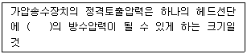
23. 다음 중 정지 밸브(stop valve)에 속하지 않는 것은?
24. 중앙식 급탕방식에 대한 설명 중 옳지 않은 것은?
25. 다음의 통기배관에 대한 설명 중 옳지 않은 것은?
26. 다음 중 배수관에 트랩을 설치하는 가장 주된 목적은?
27. 트랩의 봉수파괴 요인 중 배수입관 가까운 곳에 기구를 설치하는 경우, 상층부 기구의 다량배수가 급속히 흘러 배수 횡지관의 공기 흐름이 유인되어 봉수가 파괴되는 현상은?
28. 다음 중 사무실, 학교, 공장, 극장, 백화점 등 사용빈도가 많거나 일시적으로 많은 사람들이 연속하여 사용하는 경우에 가장 적합한 대변기는?
29. 관의 스케쥴 번호의 결정 요소는?
30. 급탕설비에서 순환펌프와 순환수량 결정 방식으로 가장 알맞은 것은?
31. 다음과 같은 조건에서 요구되는 수도 본관의 최저 압력은?
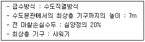
32. 다음과 가장 관계가 깊은 것은?
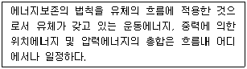
33. 생물화학적 오수처리방법 중 생물막법에서 사용되는 접촉재가 갖추어야 할 조건과 가장 거리가 먼 것은?
34. 다음 중 급수배관이 실내를 관통해야 할 경우 가장 유의하여야 할 사항은?
35. 지하의 수조에서 매시간 27m3의 물을 고가수조에 양수할 때 유속을 1.5m/s 로 하면 필요한 펌프의 구경은?
36. 펌프의 전양점이 30m, 양수량이 20m3/h 일 때 펌프의 축동력은? (단, 펌프의 효율은 60%)
37. 다음 설명에 알맞은 신축이음쇠는?
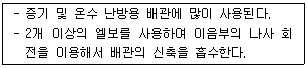
38. 다음의 고가수조에 대한 설명 중 옳지 않은 것은?
39. 다음 중 기구배수부하단위가 가장 적은 것은?
40. 건물내 가스배관의 배관재료로 가장 널리 사용되는 것은?
3과목: 공기조화설비
41. 어떤 실내의 취득 현열량이 7500W, 잠열량이 2500W 이다. 실내의 공기조건을 26℃, 50%PH로 유지하기 위하여 취출온도를 17℃로 송풍하고자 할 때 현열비(SHF)는?
42. 다음 중 공기조화 설비계획시 외부 존의 조닝 방버으로 가장 적합한 것은?
43. 어느 건물의 외벽이 북측에 접할 때 난방시 이 벽체를 통한 관류부하는? (단, 외부 면적은 120m2, 열관류율 2.87 W/m2·K, 실내온도 22℃, 외기온도 –3℃, 상당온도차 6.7℃, 방위계수 1.2)
44. 겨울철 중력환기를 위한 급기구와 배기구의 설치위치로 가장 알맞은 것은?
45. 다음의 배관 부속의 연결 중 사용 목적이 동일하지 않은 것은?
46. 다음과 같은 특징을 갖는 냉동기는?
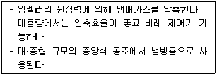
47. 전손실열량 15kW인 사무실에 설치할 증기 난방용 방열기의 필요 섹션수는? (단, 표준상태이며, 표준방열량은 0.756 kW/m2, 방열기 섹션 1개의 방열면적은 0.20 m2 이다.)
48. 다음의 덕트에 관한 설명 중 옳지 않은 것은?
49. 다음의 용어 중 펌프와 관련성이 없는 것은?
50. 흡수식 냉동기의 사이클로 옳은 것은?
51. 건구온도 20℃, 절대습도는 0.010 kg/kg′ 인 습공기의 엔탈피는? (단, 건공기의 정압비열 1.01 k?J/kg·K, 0℃에서 포화수의 증발잠열 2501 kJ/kg, 수증기의 정압비열 1.85 kJ/kg·K)
52. 공조기용 코일에 대한 설명 중 옳지 않은 것은?
53. 증기난방의 배관 방법에 관한 설명 중 옳지 않은 것은?
54. 덕트경로 중 풍량이 일정한 상태에서 덕트의 크기가 축소되었을 경우 압력변화에 관한 설명으로 옳은 것은?
55. 다음 설명에 알맞은 덕트의 치수 결정법은?
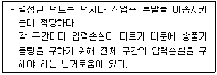
56. 실내공기 오염을 평가하는 지표로서 탄산가스 농도를 사용하고 있는데 그 이유로 옳은 것은?
57. 다음의 공기조화방식에 대한 설명 중 옳지 않은 것은?
58. 냉방부하 계산시 현열과 잠열을 동시에 보유하고 있는 부하 인자가 아닌 것은?
59. 다음의 밸브와 사용 용도의 연결이 옳지 않은 것은?
60. 다음의 정의에 알맞은 공기조화부하의 관련된 용어는?
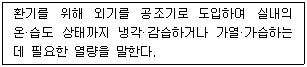
4과목: 건축설비관계법규
61. 일반적으로 연면적이 얼마 이상인 건축물의 경우 건축허가 등을 함에 있어서 미리 소방본부장 또는 소방서장의 동의를 받아야 하는가?
62. 공동주택의 거실에 채광을 위하여 설치하는 창문등의 면적 기준으로 옳은 것은?
63. 건축물에 설치하는 칸막이벽을 내화구조로 하여야 하는 대상에 속하지 않는 것은?
64. 건축물에 급수·배수·난방 및 환기의 건축설비를 설치하는 경우 건축기계설비기술사 또는 공조냉동기계기술사의 협력을 받아야 하는 건축물의 연면적 기준은? (단, 창고시설은 제외)
65. 다음 중 개인하수처리시설의 설치 신고시 제출하여야 하는 서류는?
66. 공동주택의 난방설비를 개별난방방식으로 하는 경우에 대한 기준으로 옳지 않은 것은?
67. 건축물의 출입구에 설치하는 회전문의 설치기준으로 옳지 않은 것은?
68. 건축물에 설치하는 굴뚝의 옥상 돌출부는 지붕면으로부터의 수직거리를 얼마 이상으로 하는 것을 원칙으로 하는가?
69. 다음 중 방역대상물품에 해당하지 않는 것은?
70. 다음은 특정소방대상물에서 스프링클러설비 설치의 면제 요건에 관한 기준 내용이다. ( ) 안에 알맞은 설비는?
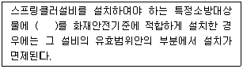
71. 다음의 소방시설 중 소화활동설비에 속하는 것은?
72. 다음은 건축물의 에너지절약 설계기준에 따른 용어의 정의이다. ( ) 안에 알맞은 것은?
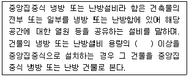
73. 다음 중 건축법상 용어의 정의가 옳은 것은?
74. 다음 중 신축으로 볼 수 없는 것은?
75. 다음 중 비상용승강기를 설치하여야 하는 건축물은?
76. 다음과 같은 조건에서 소매시장의 용도에 쓰이는 피난층에 설치하는 건축물의 바깥쪽으로의 출구의 유효너비의 합계는 최소 얼마 이상이어야 하는가?
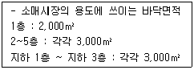
77. 다음 중 1급 방화관리대상물에 두어야 할 방화관리자의 선임대상자에 속하지 않는 자는?
78. 다음은 비상조명등을 설치하여야 하는 특정소방대상물 기준 내용이다. ( ) 안에 알맞은 것은? (단, 가스시설 또는 창고와 이와 비슷한 것은 제외)
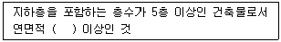
79. 다음 중 6층 이상의 거실면적의 합계가 6,000m2 인 경우, 설치하여야 하는 승용승강기의 최소 대수가 가장 많은 건축물의 용도는?
80. 축냉식 전기냉방설비의 설계기준 내용으로 옳지 않은 것은?